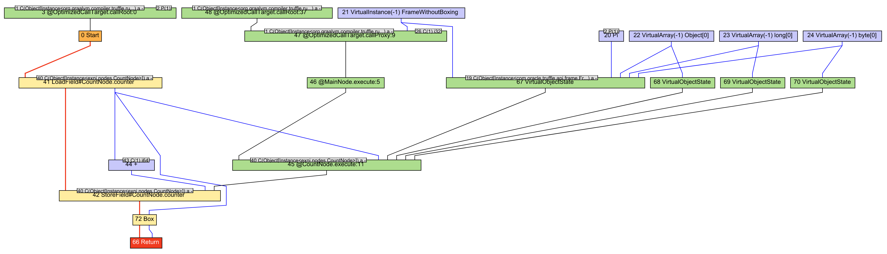

RSS Feed
RSS Feed
Truffle Tutorial: Adding 1 and 1 Together
18 Jul 2020I've now been working on TruffleRuby for about 7 months. TruffleRuby is a Ruby implementation built on top of GraalVM and its Truffle API. Truffle allows languages to be implemented on top of Graal as AST interpreters.
I wanted to share a little bit of what I learned of Graal and Truffle, so I decided to write this tutorial, which demonstrates the basics of Truffle through simplistic examples.
We are setting our ambition very low for this post. We are going to implement the almost-simplest possible language. It will only be able to add numbers and strings together. Doing this will teach us about some core principles of Truffle. Then, we will use the Ideal Graph Visualizer (IGV) tool to inspect the result of compilation.
What Graal and Truffle Do
Before entering into the minute details, I want to give you an overview of what Graal and Truffle actually do, and why it's interesting to use them at all.
Why build your language on Graal/Truffle? The one line answer is that you can make it go fast, easily. The more dynamic / abstract your language, the more it will benefit from the optimizations offered by Truffle: writing your own advanced JIT compiler is not a light undertaking.
You will also get other goodness, such as debugging support for free. There are two good articles that should sell you on the technology: "Graal & Truffle" by Mike Hearn (hype check: not every promise is entirely realized, but it's in the works) and "Top 10 Things To Do With GraalVM" by Chris Seaton (hype check: this is all real).
As for how the technology actually works, the best explanation for Graal is probably Chris Seaton's talk Understanding How GraalVM Works (a full transcript with inline slides is available!). This is deep technical content, clearly explained. It doesn't cover Truffle, however.
Here is my own broad overview of how Graal/Truffle makes your code fast:
When using the Truffle API, Graal (which includes a just in time (JIT) compiler) will compile hot parts of the AST to efficient machine code. In particular, the hot parts of the AST will be partially evaluated. While this has multiple performance implications, it will most notably avoid a lot of the megamorphic call overhead that an AST interpreter would normally suffer from.
The Truffle API also offers other ways to improve performance. Most notably is its reliance on (polymorphic) inline caching. In a program, there are regularities that are hard or impossible to detect statically. For instance, maybe a function works on different kinds of values, but in practice only ever receives a single kind. Truffle lets you specify specializations which handle a subset of all cases that are allowed to occur. Then, at runtime, Truffle will generate optimized code only for the specializations that were actually encountered in practice, and insert a check to verify that we do not encounter other cases (in which case we need to throw away the compiled code and start the process again). This is called inline caching because we cache the encountered specializations in the AST. We'll cover the specialization mechanism in detail in this article.
The typical use case for inline caching is method lookup: virtual method calls have a tendency to always be done on an instance of the same class. Using inline caching, we can store this class, and specialize the code for it, which avoids repeating the costly method lookup. However, Truffle's caches are very flexible, and it's possible to specialize on arbitrary conditions — depending on what the language implementer specifies. See here and there for more details.
The Truffle API also offers more advanced utilities to optimize your language, such as compilation final values and assumptions (in particular, those two help improve the result of partial evaluation). We won't talk about these here, but maybe some other time.
Setup
To follow along with the examples, you'll need to install GraalVM. In
particular, I used the 20.1.0 version with OpenJDK 11. You can download it
here. Then follow the installation instructions. You can also add
it as a SDK to your IDE, usually you'll need to point it to the Java home
directory (the thing you're told to put in JAVA_HOME in the installation
instructions).
Note that if you're on macOS and you're hit with an error that reads
“graalvm-ce-java11-20.1.0” cannot be opened because the developer cannot be verified. or macOS cannot verify that this app is free from malware. when
trying one of GraalVM's binaries (java, javac, ...), you can fix the
situation by running:
sudo xattr -dr com.apple.quarantine graalvm-ce-java11-20.1.0
(Replace graalvm-ce-java11-20.1.0 by the path to the root directory of your
GraalVM installation.)
You'll also need the Ideal Graph Visualizer (IGV), (again, I used version 20.1.0 for Java 11). IGV is normally part of the (paid/licensed) Entreprise Edition of GraalVM, but you can evaluate it for free. Be aware that, in principle, the code you evaluate IGV on cannot be used commercially (IANAL etc). You can download it here.
Same as before, if you get an error on macOS, you might need to run the
following (where idealgraphvisualizer is the directory where you extracted
IGV):
sudo xattr -dr com.apple.quarantine idealgraphvisualizer
I'm going to walk through my whole language example, showing you the code as I go. However, the entire source is avaiable on this Github repository.
Let's get started. We'll use Maven to build the project and pull in the dependencies. To install it, just use your package manager of choice, or follow the install instruction.
Here is the Maven config file for the project (pom.xml 🔗):
<?xml version="1.0" encoding="UTF-8"?>
<project xmlns="http://maven.apache.org/POM/4.0.0" xmlns:xsi="http://www.w3.org/2001/XMLSchema-instance" xsi:schemaLocation="http://maven.apache.org/POM/4.0.0 http://maven.apache.org/xsd/maven-4.0.0.xsd">
<modelVersion>4.0.0</modelVersion>
<groupId>com.norswap</groupId>
<artifactId>exni</artifactId>
<version>1.0.0-SNAPSHOT</version>
<build>
<sourceDirectory>src</sourceDirectory>
<plugins>
<plugin>
<groupId>org.apache.maven.plugins</groupId>
<artifactId>maven-compiler-plugin</artifactId>
<version>3.8.1</version>
<configuration>
<source>11</source>
<target>11</target>
</configuration>
</plugin>
</plugins>
</build>
<properties>
<project.build.sourceEncoding>UTF-8</project.build.sourceEncoding>
<graalvm.version>20.1.0</graalvm.version>
</properties>
<dependencies>
<dependency>
<groupId>org.graalvm.truffle</groupId>
<artifactId>truffle-api</artifactId>
<version>${graalvm.version}</version>
</dependency>
<dependency>
<groupId>org.graalvm.truffle</groupId>
<artifactId>truffle-dsl-processor</artifactId>
<version>${graalvm.version}</version>
<scope>provided</scope>
</dependency>
</dependencies>
</project>
There's nothing incredibly tricky going on here. Sources go to src
(src/main/java can burn in hell), we're using Java version 11, and pulling down
the Truffle API and Truffle annotation processor version 20.1.0.
I'm calling this project exni for "ex nihilo". I'm cute like that.
Building the AST
The first thing we need to do is to build a simple AST to be evaluated.
package exni.nodes;
import com.oracle.truffle.api.frame.VirtualFrame;
import com.oracle.truffle.api.nodes.Node;
public abstract class ExniNode extends Node
{
/** main execute method */
public abstract Object execute (VirtualFrame frame);
}
We'll use this as the parent class for all our AST nodes. It inherits from the
Truffle Node class itself. The execute method evaluates the node and returns
a result of type Object. It takes a VirtualFrame, which represents a
stack frame: that of the "function" (or equivalent concept) to which the node belongs.
The name execute is special in Truffle. Truffle is aware of node methods whose
name start with execute and will call the appropriate one when it needs to
evaluate the children of another AST node. Which execute method is appropriate
depends on the requested value type (Object being the most general, and
therefore always applicable) as well as available parameters.
Let's move to the simplest node implementation possible:
package exni.nodes;
import com.oracle.truffle.api.frame.VirtualFrame;
public final class IntLiteralNode extends ExniNode
{
public final long value;
public IntLiteralNode (long value) {
this.value = value;
}
@Override public Object execute (VirtualFrame frame) {
return value;
}
}
This node represents an integer literal that appears in source code. We
implement the execute method to simply return that number.
Now, a node for the + operator:
package exni.nodes;
import com.oracle.truffle.api.dsl.Fallback;
import com.oracle.truffle.api.dsl.NodeChild;
import com.oracle.truffle.api.dsl.Specialization;
import exni.ExniException;
@NodeChild("left")
@NodeChild("right")
public abstract class AddNode extends ExniNode
{
public static AddNode create (ExniNode left, ExniNode right) {
return AddNodeGen.create(left, right);
}
@Specialization protected long addLongs (long left, long right) {
return left + right;
}
@Specialization String addStrings (String left, String right) {
return left + right;
}
@Fallback protected void typeError (Object left, Object right) {
throw new ExniException("type error: args must be two longs, or two strings", this);
}
}
The two NodeChild annotations define children nodes of this AST node. By
default, these have the type of the superclass (ExniNode in this case), but
it's also possible to specify the type explicitly with the type annotation
element.
This class is abstract, but Truffle will generate a concrete implementation for
us, named AddNodeGen. If you load the project in your IDE, you
can navigate there easily (import the Maven project and build first). We will
examine this class shortly.
The logic of the class is implemented using the specialization system. Instead
of overriding the execute method(s), we mark a series of method with the
Specialization and Fallback annotations.
The idea is that when the node is executed, Truffle will pick the first matching
specialization and run it. There are two criteria used when matching
specializations: the type of its parameters and additionals conditions specified
by the guards annotation element.
This is a very simple node, so it only has two specializations and a fallback,
one for when both values are long (Truffle will automatically perform unboxing
whenever required), and one for when both values are strings. Additionally,
there is a fallback specialization. A fallback specialization is a
specialization that will always match when (and only when) no other
specialization does. In this case, we just throw an type error.
The implementation of
ExniExceptionis irrelevant, excepted that all exceptions thrown during guest language execution must implementTruffleException— excepted those exceptions that represent errors in the implementation itself.
Note that the names of the specialization methods are irrelevant, they could have been anything, including the same name (as long as it generates distinct method overloads, of course).
Specializations: Under The Hood
Let's look at the class generated by Truffle to implement our abstract
AddNode:
package exni.nodes;
// ...
@GeneratedBy(AddNode.class)
public final class AddNodeGen extends AddNode {
@Child private ExniNode left_;
@Child private ExniNode right_;
@CompilationFinal private int state_;
private AddNodeGen(ExniNode left, ExniNode right) {
this.left_ = left;
this.right_ = right;
}
@Override
public Object execute(VirtualFrame frameValue) {
int state = state_;
Object leftValue_ = this.left_.execute(frameValue);
Object rightValue_ = this.right_.execute(frameValue);
if ((state & 0b1) != 0 /* is-active addLongs(long, long) */ && leftValue_ instanceof Long) {
long leftValue__ = (long) leftValue_;
if (rightValue_ instanceof Long) {
long rightValue__ = (long) rightValue_;
return addLongs(leftValue__, rightValue__);
}
}
if ((state & 0b10) != 0 /* is-active addStrings(String, String) */ && leftValue_ instanceof String) {
String leftValue__ = (String) leftValue_;
if (rightValue_ instanceof String) {
String rightValue__ = (String) rightValue_;
return addStrings(leftValue__, rightValue__);
}
}
CompilerDirectives.transferToInterpreterAndInvalidate();
return executeAndSpecialize(leftValue_, rightValue_);
}
private Object executeAndSpecialize(Object leftValue, Object rightValue) {
int state = state_;
if (leftValue instanceof Long) {
long leftValue_ = (long) leftValue;
if (rightValue instanceof Long) {
long rightValue_ = (long) rightValue;
this.state_ = state = state | 0b1 /* add-active addLongs(long, long) */;
return addLongs(leftValue_, rightValue_);
}
}
if (leftValue instanceof String) {
String leftValue_ = (String) leftValue;
if (rightValue instanceof String) {
String rightValue_ = (String) rightValue;
this.state_ = state = state | 0b10 /* add-active addStrings(String, String) */;
return addStrings(leftValue_, rightValue_);
}
}
this.state_ = state = state | 0b100 /* add-active typeError(Object, Object) */;
typeError(leftValue, rightValue);
return null;
}
@Override
public NodeCost getCost() { /* ... */ }
private static boolean fallbackGuard_(int state, Object leftValue, Object rightValue) {
if (((state & 0b1)) == 0 /* is-not-active addLongs(long, long) */ && leftValue instanceof Long && rightValue instanceof Long) {
return false;
}
if (((state & 0b10)) == 0 /* is-not-active addStrings(String, String) */ && leftValue instanceof String && rightValue instanceof String) {
return false;
}
return true;
}
public static AddNode create(ExniNode left, ExniNode right) {
return new AddNodeGen(left, right);
}
}
It has three fields. The first two were generated by the NodeChild
annotations. There is also a create method at the bottom, which can be used to
get create an instance of AddNode if given its two children. The third field
(state_) keeps track of what specializations are active for the node.
Active specializations? What does that even mean? Well, whenever a specialization is first used, it becomes active. One node can have multiple specializations active at the same time. A new node starts with no active specializations.
For instance, let's imagine a small syntax and a dummy program for our language:
def add(x, y)
return x + y; // AddNode 1
add(1, 2)
add("a", "b")
1 + 2 // AddNode 2
I have used comments to mark the two locations where an AddNode is generated.
AddNode 1 will see both integer and string values, and so both specializations
will become active. AddNode 2, on the other hand, will only ever see integers.
But why do we need to distinguish between active and inactive specializations? Doing so helps Graal's JIT compiler generate better compiled code. Whenever the node has to be JIT-compiled, Graal will only emit machine code for the specializations that have been activated. Having less possibilities has multiple benefits. First there are less cases to check. Second, the reduced set of possibilities may enable further optimizations (especially when there is only a single active specialization). Finally, all else being equal, shorter code is generally faster (more efficient cache utilisation).
This raises one more question: what happens if, after generating compiled code, we encounter a case covered by a specialization that hasn't been activated yet? In that case, the compiled code is invalidated, and the new specialization is activated. New compiled code may subsequently be generated.
Let's go back to the code. Truffle has automatically generated the execute
method that was left abstract (in ExniNode, AddNode's superclass). It has
also generated an executeAndSpecialize method that execute calls. Relating
to our previous discussion, execute should be understood as running the active
specializations, while executeAndSpecialize is responsible to activate new
specializations.
execute starts by executing the two children nodes. Then, if our addLongs
specialization is active, and if both resulting values can be cast to long, it
calls AddNode#addLongs. Otherwise, if our addStrings specialization is
active and if the values can be cast to String, it calls AddNode#addStrings.
If that's not possible either, it calls
CompilerDirectives.transferToInterpreterAndInvalidate() and then
executeAndSpecialize.
executeAndSpecialize does almost the same thing, but does not check for
activated specializations, only for the specific conditions in which a
specialization may apply. Additionally, it activates any specialization it
calls. Finally, if none of the two specialization matches, it calls our fallback
specialization AddNode#typeError.
Now you might think from this that fallback specializations may never be
activated. This is not so. The only reason that typeError does not appear in
execute is that its return type (void) is incompatible with that of
execute (Object). If we wanted the specialization to be activable, we could
change its return type to Object. Since it is an extraordinary error
condition, I chose not do that here. I encourage you to try it and check that
the generated code changed accordingly.
Note you can observe similar effects when multiple execute methods have
different type parameters. The execute methods will be JIT-compiled
separately, which can lead to more efficient code for the method whose signature
is more restrictive (as it doesn't have to include the activated specializations
that don't match the signature).
How the Magic Happens
Why is the logic split between execute and executeAndSpecialize? It's
because execute is what will become JIT-compiled. All its calls to
specializations are guarded by conditions on _state. _state is marked with
CompilationFinal annotation. This annotation tells Truffle to consider that
the field is effectively final for partial evaluation and compilation purposes.
In practice, this means that calls to inactive specializations will be pruned
from the compiled code, hence only retaining the active specializations. It's
exactly what we want to get the benefits I outlined a bit before.
This also explains why specialization activation is relegated to
executeAndSpecialize. That method will never be compiled, because it is only
called from the execute methods, and always preceded by a call to
CompilerDirectives.transferToInterpreterAndInvalidate which tells Truffle to
invalidate the current compiled code for the method! Truffle is aware of this,
and so will never inline executeAndSpecialized into execute.
That CompilerDirectives.transferToInterpreterAndInvalidate call is also
what ensures that we discard the current compiled code when a new specialization
becomes active.
You can learn more about the specialization system in Christian Hummer's master thesis.
Running
Okay, so we have our grand addition/concatenation node. Let's actually use it. Here is our main class:
package exni;
import com.oracle.truffle.api.Truffle;
import exni.nodes.AddNode;
import exni.nodes.IntLiteralNode;
import exni.nodes.ExniRootNode;
public abstract class ExniMain
{
public static void main (String[] args)
{
var add = AddNode.create(new IntLiteralNode(1), new IntLiteralNode(2));
var root = new ExniRootNode(add);
var target = Truffle.getRuntime().createCallTarget(root);
// Uncomment this in order to use a CountNode instead of an AddNode.
// target = Truffle.getRuntime().createCallTarget(new MainNode(new CountNode()));
System.out.println(target.call());
// Uncomment this in order to force the compilation of the node.
// while (true) target.call();
}
}
Don't worry about the "uncomment" bit. We'll get to those later.
We construct our AddNode as expected, but then we wrap it into a
ExniRootNode. This is an implementation of the Truffle RootNode class. In
Truffle, runnable nodes belong to a tree with RootNode at the root. For
instance, there is typically one RootNode per function definition.
RootNode also holds a reference to a FrameDescriptor that describes the
parameters expected by the node (in the case of a function definition: the
function's parameters). We do not need to specify this here, since our addition
expression does not take parameters.
ExniRootNode doesn't do anything fancy by itself: it just wraps an ExniNode,
and extends RootNode.
package exni.nodes;
import com.oracle.truffle.api.frame.VirtualFrame;
import com.oracle.truffle.api.nodes.RootNode;
public final class ExniRootNode extends RootNode
{
@SuppressWarnings("FieldMayBeFinal")
private @Child ExniNode root;
public ExniRootNode(ExniNode root) {
super(null);
this.root = root;
}
@Override public Object execute (VirtualFrame frame) {
return root.execute(frame);
}
}
The next step is to call
Truffle.getRuntime().createCallTarget(root) to create a
CallTarget. The call target represents something you can call (in this case,
it's our add expression).
Note that in general, expressions don't have an associated
CallTarget. It's typically reserved for callable things like functions and methods. But our language does not have those, and we need aCallTargetto run the code.
We use a CallTarget instead of call the node's execute method directly so
that Truffle may perform some bookkeeping on the call. In particular, the
CallTarget records how often our node is called, so that Truffle may decide
when to JIT-compile it. It can also be used for instrumentation. Finally, it
wires up the CallTarget so that it will automatically create an object
representing a stack frame (i.e. the VirtualFrame argument taken by our
various execute methods) when called.
All that is left to do is to invoke CallTarget#call and print
the result.
To run this after building with Maven, you can use the following command:
M2=$HOME/.m2/repository
java \
-Dtruffle.class.path.append=target/classes \
--add-exports org.graalvm.truffle/com.oracle.truffle.api.nodes=ALL-UNNAMED \
--add-exports org.graalvm.truffle/com.oracle.truffle.api=ALL-UNNAMED \
-classpath target/classes:$M2/org/graalvm/truffle/truffle-api/20.1.0/truffle-api-20.1.0.jar:$M2/org/graalvm/sdk/graal-sdk/20.1.0/graal-sdk-20.1.0.jar \
exni.ExniMain
A couple practical points:
- you need to be at the repository's root
javamust point to the GraalVM version$M2should point to your m2 repository (by default it's$HOME/.m2/repository).- You can configure your IDE to run this instead, you'll just need to specify the main class and all the other non-classpath arguments.
- Don't forget to run this with GraalVM's
java! It will run with otherjavabut Truffle nodes won't be compiled specially.
Lo and behold, your console should print the glorious number 3!
Extra technical note: The
add-exportsarguments are needed because classes incom.oracle.truffle.apineed to be loaded via Truffle's own class loader. Theadd-exportsarguments ensure that the class loader associated with the module is used. Similarly, definingtruffle.class.path.appendenables that classloader to find our own node classes.
IGV
To run IGV, simply run the bin/idealgraphvisualizer in your IGV install
directory (just wherever you unzipped the downloaded archive). This will tie up
the console in which IGV is run — if you it to run in the background, I
recommend using screen:
screen -dm -S igv bin/idealgraphvisualizer
screen -r igv # to attach to the screen
Next you'll need to configure your java run command in order for it to generate
compilation graphs and send them to IGV. You can achieve this by adding the
following flags to your Java command: -Dgraal.Dump=Truffle -Dgraal.PrintGraph=Network. Full command:
M2=$HOME/.m2/repository
java \
-Dtruffle.class.path.append=target/classes \
--add-exports org.graalvm.truffle/com.oracle.truffle.api.nodes=ALL-UNNAMED \
--add-exports org.graalvm.truffle/com.oracle.truffle.api=ALL-UNNAMED \
-classpath target/classes:$M2/org/graalvm/truffle/truffle-api/20.1.0/truffle-api-20.1.0.jar:$M2/org/graalvm/sdk/graal-sdk/20.1.0/graal-sdk-20.1.0.jar \
-Dgraal.Dump=Truffle \
-Dgraal.PrintGraph=Network \
exni.ExniMain
The Dump=Truffle option means to only dump graphs relevant to analysing
Truffle's performance (for instance it won't include graphs for compiled Java
code that is not related to Truffle).
The PrintGraph=Network option means to send the graphs directly to a running
IGV over the network. If you omit this, it will default to dumping the graphs as
files in graal_dumps/ in the working directory, and you can open those later
from IGV.
These flags are documented on Graal's git repository here (master) (future-proof(er), commit-specific link).
IGV lets you inspect the result of JIT compilation. Our code so far is very
simple, and does not trigger JIT compilation. However, we can trigger
compilation simply by calling our CallTarget withing an infinite loop
(while (true) target.call();).
Remember that we said that
CallTargetcounts calls in order to decide what to optimize? You will now see it's true: calling inside a loop causes the counter to cross the threshold for compilation.
Run it, you should now see something like this in IGV:

If you select the AST graph, you'll see this, which is exactly the node hiearchy we build in our main class:

The "call tree" graph is not interesting because our nodes do not contain a guest language function call (our language doesn't even have those).
The "Graal Graphs" section contains graphs at various stages of the compilation process. We'll be particularly interested in "Before phase Lowering" which contains the graphs obtained after all of Truffle's optimizations have been run (GraalMV still run generic optimizations after this however). In this case, you'll see this:

Which is to say, almost nothing! The compiler was smart and the addition of two
constants was completely optimized away. Do you see that small 62 node? C(3)
means "constant with value 3" and that's the result of our addition. At this
stage, it still needs to box that value though. But if you look to any further
graph, you'll see:
The result of the boxing operation is a constant instance of Long, so we can
eliminate the boxing operation.
You may wonder why this does not get optimized even further. After all, the
return value is never used. The answer is that the logic that calls the call
target (target.call()) is quite complex and therefore cannot be optimized
away. You can actually get to see the graph for that by replacing the
-Dgraal.Dump=Truffle flag by -Dgraal.Dump=:1 and looking for the code of the
main method (exni.ExniMain.main). You can also move the loop to another method
if you want to get rid of the part of the graph that corresponds to the
construction of the AST. It looks something like this.
{kind=link}
So we can note that calling the call target within a loop is not a great idea.
We could probably see that our AddNode gets optimized away completely if we
implemented a loop in the guest language itself.
A slightly harder graph, and what does it mean, anyway?
Okay, so let's see some actual graphs. We'll create a new node that doesn't optimize away. This node will be a counter that updates a public field:
package exni.nodes;
import com.oracle.truffle.api.frame.VirtualFrame;
public final class CountNode extends ExniNode {
public long counter;
@Override public Object execute (VirtualFrame frame) {
return counter++;
}
}
Even though we'll never read the counter, the field is public and the compiler cannot prove that it won't be read, so it has to be dutifully incremented.
If you modify the main method to run this node instead, and go to the graphs (still "Before phase Lowering") — click for full size version:
{kind=link}
First off, all the green stuff is "state". I'll be honest: I'm not too sure what
"state" is supposed to be in general, but in this case (and in conjunction with
grey boxes), it shows you a couple of the methods invoked to start the node's
execution, as well as relevant parameter to these methods. In particular, node
21 shows an instance of Truffle's internal FrameWithoutBoxing class, and all
the VirtualArray nodes to the right of that are its fields.
Anyway, you can hide the state in the "Filters" panel on the right in IGV. You could also hit "Remove floating" to get rid of the grey boxes, but I want to keep node 44 (+). Instead I've hidden the other grey boxes manually, and we're left with this:

This is fairly simple to understand: our node loads the counter field in node
41, and adds 1 to it in node 44. Notice how one operand comes from the blue
line, while the other is given by the small box 43 on top: C(1) i64 means that
the operand is the constant 1, which is a 64-bits integer. We store the result
of this operation back into the field in node 42. Notice how node 41 has a line
going to node 44 and one line going to node 72 (Box), which is the return value?
That's because we used return counter++ (and not return ++counter): the node
evaluates to the pre-incremented value!
From this explanation, you can see that blue lines represent data flow: a blue line going down means the data coming out of the higher node is being used by the lower node. There is also a thick red line: that represents control flow, i.e. it determines what operations happen before which others.
We've barely scratched the surface of Graal graphs here (we haven't even talked about conditionals and loops). If you want to know more, I highly recommend these two writeups by Chris Seaton (the first one is essentially a much shorter teaser version of the second one, which you really ought to read in full if you're going to work with IGV):
- Understanding Programs Using Graphs @ Shopify Engineering
- Understanding Basic Graal Graphs @ chrisseaton.com
Going Further
That's it for today! I have some extra material that was cut from this article that I might rework and post in a couple weeks. Namely, it covers how to set up the boilerplate to create a "real" Truffle guest language and how to implement loops inside the guest language.
If you want to learn more about Graal & Truffle, here a few pointers on where to find information & documentation:
Christian Hummer's master thesis document the Truffle DSL, i.e. how to actually use Truffle. It's very clearly written and if you're going to jump on the Truffle bandwagon, you really ought to read chapters 2 and 3. This will give you a good understanding of the principles behind the Truffle DSL.
The Truffle Javadoc is very decent, but it will rarely tell you the why of things.
The SimpleLanguage example is a full language implemented with a lot of comments as an example of how things should generally be done in Truffle. It's the main ressource on how to actually do the advanced stuff.
I also encourage you to experiment with Truffle directly (showing you how was the whole point of this article)!
In closing, I want to thank my amazing and talented colleagues at Oracle, who patiently answer my many questions, and in particular Benoit Daloze — for teaching me most of what I know about Truffle, Christian Humer — for always helping wherever Truffle is concerned, and Boris Spasojevic for supplying very helpful feedback on the present article.